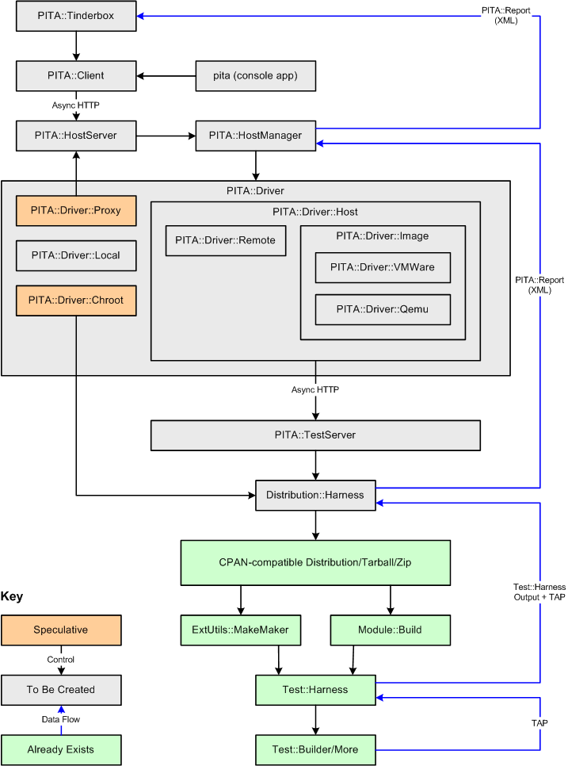

Ali.as Software |
|
| Main · About · Contact | |
PITA - The Perl Image Testing Architecture(FIRST DRAFT for comment only) Testing Perl packages against a variety of different environments is generally recognized as being a Pain In The Ass to do. The Perl Image Testing Architecture (PITA) is an attempt to comprehensively solve the problem of mass testing Perl packages against a wide variety of different environments. It does this by defining an extremely flexible and potentially 100% automatable architecture and a set of APIs that are layered on top of the current testing APIs. This architecture will be primarily oriented towards, but not limited to, the testing of packages on defined system images, such as those provided by virtual host software such as VMWare. In this vision of a working PITA system, a testing package will be provided to a testing controller by any number of mechanisms, tested against any number of environments automatically, with a single collated report then returned. This process should be automatable, so that entire collections of packages can be automatically tested, with results processed and errors flagged in a notional package status tracker. THE PROBLEMIn the modern Perl universe (as it exists in 2005 at least) we have highly robust and successful mechanisms for testing Perl code. The emerging standard is for all Perl packages to follow the "CPAN Style" of packaging, the reasoning being that even Perl packages that won't ever end up on the CPAN can take advantage of the wealth of tools that have been created as a result of scaling the CPAN up to coordinate its thousands of authors and tens of thousands of interdependant software modules. Although this standard is not yet universal in non-CPAN Perl software, it is increasingly heading in that direction, especially for newly created Perl packages. But while it is now trivial to test a package against a single Perl installation on a single instance of a single platform, it is much more difficult to test a package against a wide variety of platforms, especially considering that Perl exists in an enormous number of different environments. Current SolutionsSome progress has been made in this area. The CPAN Testers group provides testing for relatively modern Perl versions on a range of different environments. However this system as a whole suffers from a number of problems. Primarily, it only tests CPAN modules, only tests them after they are uploaded and installable by the general userbase, and each CPAN Tester only tests the modules that they are able to test based on the non-Perl software or hardware in their environment. The individual author has zero control over what will be tested and when. Finally, most testing implementations do not provide rollback. As such it is extremely difficult to do testing of a module on a fresh Perl install, and catch problems far down the dependency chain of a package. Individually, some authors have set up customized solutions to test packages against a wide variety of different Perl versions installed in parallel on a single environment, but these are generally one off creations that are not particularly robust. This does solve some problems, but does not exist in any standardized fashion, and would be non-trivial for an author without high-level system administration skills to set up in their local environment. Scope of the ProblemThe primary goal of the PITA is to be able to test any Perl package that is compatible with the CPAN package format, on any arbitrary environment for which a PITA-compatible system image can be created or obtained from others. Further, to do this testing at the author's convenience, or at the convenience of anyone in possession of the package. Further, to do this testing an arbitrary number of times on an arbitrary number of different environments using a universal mechanism, or at the very least via a universal API. Further, to do this testing in such a way that no user-interaction is required by the testing, other than during the setup procedure of a single PITA install. And in addition so that potentially the entire process at any level of abstraction from one environment-package-test to any number of environments, packages and tests, can be completely and totally automated. Dimensions of the ProblemThe scope of the packages and potential testing environments themselves should span the following.
While this is an extremely wide scope, none of the dimensions described are individually difficult to implement, although abstracting completely may be difficult. Installation of a PITA InstanceDepending on the nature of the testing required to be done, it is expected that there will often need to be some significant customization of the particular testing environments in order for the testing to take place. As such, there should not be an expectation that a PITA setup can be created completely automatically 100% of the time. However while some significant work may need to be done to the testing environments, setting up the PITA installation should require no (zero) code to be written. That said, it should be expected that some effort may be needed to create and/or modify the configuration to drive the system once it has been installed. Sensible defaults or pre-built profiles may be used to enable installation of a basic PITA system to be as easy as possible. The APIs used to implement custom testing environments should be clear, to make it easy to write additional interfaces to talk to them. User InterfacesLike most modern Perl systems, all primarily functionality should be implemented with the assumption that no user interface will be used. Once the primary implementation exists, specific user interfaces should be provided that wrap around these APIs and provide convenient interactions of various types at various levels of abstraction. IMPLEMENTATION PRINCIPLESThe following principles are to be used in the creation of the PITA architecture, APIs, and implementation. Correctness and Thoroughness in Preference to SpeedBy the time a PITA system is requires, it is expected that the package will have already passed the more convenient testing done by the author on his own Perl install in his own environment. PITA testing is much more likely to be done intermittently and at critical points, such as immediately prior to a release of a package for quality control. As such, the speed of the testing process is less relevant than the correctness and completeness of the testing. Where more load-intensive or time-intensive methods are available, they should be taken without undue concern for the time involved in running them. Clear Separation of LayersWhere the architecture is broken into discrete layers, this should be done in such as way as to not require the installation and setup of a higher layer in order to utilize a lower layer. Communication between layers, be it via Perl API calls or any form of messaging, should be extremely rigorously specified, and should require the absolute minimum set of obligations on the part of the lower layer. This is done to ensure that after initial development, additional improvements can be made in ways not expected by the initial developers by implementing only this specific and minimal set of obligations. Stable InterfacesWhere there exists some level of communication between layers, such communication should be deterministic and testable. That is, when anticipating a response from a lower layer, there should be as little ambiguity as possible about the response. For example, inter-host messages should never be delivered via potentially unreliable email, and Perl API calls that may result in hard-loops or other Halting Problem issues should set clear timeouts within which the called code should respond. Compatibility with Current SystemsThe implementation should, wherever possible, provide sane integration with existing testing standards, such as the Test Anything Protocol (TAP), the Test::Harness APIs, and so on. Easy To Install, Easy to ConfigureDoing image-based testing is already a Pain In The Ass (PITA). It is intentional that the preferred acronym for this system is PITA. It should serve as a strong and continuous reminder that installing and using PITA should not be a Pain In The Ass. It would only serve to help those users who are sophisticated enough to have already set up their own testing systems, and thus be of only limited value. Authors should not need the skills of a professional sysadmin in order to use it. The installation and configuration of PITA should be easy, in every way we can make it. At the very least it should be simple to learn and straight forward to set up. If at all possible, the install and default setups should be automated to the level of a single apt-get install pita command (or the equivalent for your system). DistributableWhere possible, we should make it possible to set up a single installation of PITA, and allow it to be provided as a service. That is, an arbitrary number of remote authors (whether open or via some level of authenticated access) should be able to provide packages to be tested, have the tests scheduled and executed, and then have the results returned in some useful way. IMPLEMENTATIONThe implementation will be described first as a whole, and then component by component, working upwards from the currently implemented modules (shown in green). Implementation Overview At its heart, the test process is run via a "PITA Host Manager". The Host Manager holds the primary responsibility for taking a single CPAN-compatible package, testing it against each host environment, and compiling the results from each. Each host environment is accessed by a "PITA Host Driver". The Host Driver is responsible for locating, creating, loading and/or initializing the host environment, injecting the package into the testing environment, and then retrieving the test results on completion. The Host Driver API is intended as the primary mechanism for extending PITA beyond it's initial use of system images such as VMWare to include specially set up physical host environments, Perl chroots, proxies, and any other testing concepts third parties might wish to implement. Which the package injection method is provided by the Host Driver, within each environment there will exist a "Distribution Harness". The Distribution Harness provides the primary mechanism for (on a single host) taking a CPAN-compatible package and running it through the installation and testing process. Returning to the Host Manager and moving in the other direction, there may optionally exist a "PITA Host Server". This would most likely be some form of SOAP service or web-based package upload system that allows distributed users to provide packages to a central system for testing. This same mechanism would also provide for fully automated batch-testing of packages, and to support systems such as automated regression testers or Tinderboxes. Distribution::HarnessSeveral current systems implement various forms of distribution harness. A distribution harness is an object that takes a single package (either a tarball or a directory name) and runs an installation of the package, recording the results. If needed, this process may result in the installation of additional dependant packages pulled from CPAN or a local CPAN mirror. Distribution::Harness should also implement functionality to detect and manage infinite loops or crashes in the build process. The result of the process should be the (optionally verbose) output of the installation process, optionally compiled into the PITA::XML form on request. PITA::TestServerPrimary designed for use in host images, the Test Server provides remote access to the testing host. Notionally based around HTTP, the Test Server would take testing requests, set any necessary configuration values, initiate the testing procedure via a Distribution::Harness, and then redirect the requestor to the future URI for the report result. The requestor would then poll the URI periodically. Once completed, the PITA::XML document would be returned from that URI. If testing failed or crashed in any way, the Test Server would return the PITA::XML for the failure. Because the implementation is only designed to support a single testing host environment, the test server will only need to support a single install at once. If additional installation requests are received during a test run, they can be denied. Wherever possible, the code for the test server should NOT be part of the testing host environment. That is, the test server should be provided as a PAR application, or some other form of standalone statically linked application. This avoids environment corruption, or the potential for an installation to alter the test server itself. PITA::DriverThe key to the PITA's ability to test anywhere is its extendable driver system. The PITA::Driver API separates the business of managing testing environments, receiving test requests, and scheduling test execution from the actual details of running the test as much as possible. The base API for PITA::Driver is to be simple in the extreme with minimal assumptions, to allow for maximum extensibility of the driver system. A driver implementation should server to connect a package testing request to a valid Distribution::Harness, wherever it might be. This could be the local Perl install, another installation, or on another host (physical OR virtual). Driver objects are created by the Host Manager, sent one or more testing requests (although not in parallel) and the shut down. If it wishes, the Host Manager may create and work with more than one Driver object at a time. Any issues resulting from the use of more than one driver object at a time up the responsibility of the Host Manager implementation. PITA::Driver::HostThe PITA::Driver::Host class will provide a base class for testing environments located on other hosts. Primarily, it provides the client logic for connecting to PITA::TestServer and requesting the test, then polling for the results and returning them. PITA::Driver::RemoteThe PITA::Driver::Remote class provides a driver for connecting to real, physical, remote hosts. Apart from some logic to validate the remote host exists and is reachable BEFORE accepting testing requests, it is otherwise identical to the base PITA::Driver::Host class. PITA::Driver::ImageThe PITA::Driver::Image class represents the primary reason for existence of PITA. It provides the interface to a "system image" of some form. This means the driver will need to locate the image, boot the image, wait until the PITA::TestServer on the image is initialized, send the test requests to it, and then once testing requests are completed, shut down the testing image. (most likely discarding changes to the image). The PITA::Driver::Image base class is image-type agnostic, leaving the further details to subclasses. PITA::Driver::VMWareThe only PITA::Driver::Image subclass with a volunteer to implement it at time of writing, PITA::Driver::VMWare provides a driver to load a VMWare host image and pass testing requests. PITA::Driver::QemuAnother suggested PITA::Driver::Image subclass suggested for implementation, but without a volunteer to implement it as yet, PITA::Driver::Qemu provides a driver to load a Qemu host image and pass testing requires. PITA::Driver::LocalIt may be possible to provide a driver for installing to the local system. Of course, this could be something of a security issue, so maybe not worth doing. PITA::Driver::Chroot (Speculative)A more likely scenario than PITA::Driver::Local would for the testing system to host a number of Perl installations inside of chroot jails. In this case, a PITA::Driver::Chroot object would provide access to the chroot'ed Perl. PITA::Driver::Proxy (Speculative)Managing a very large number of test hosting environments could have some issues from both a resources and implementation perspective. Especially in the case of PITA::Driver::Remote where there may exist specialized equipment which (based on PITA::TestServer) needs to have any testing requests marshaled and only executed serially. It could also allow for several other varied scenarios for expanding the quantity and diversity of environments for a package to be tested in. As a result, it may be worthwhile for a Host Manager to pass on testing for one or more platforms to another host manager on another system. This driver would act like any other client, passing on the requests to the remote Host Manager and waiting for a response. PITA::HostManagerThe PITA::HostManager provides the central focus of the larger PITA architecture. This system is responsible for accepting and managing multiple testing requests, for scheduling the tests against the relevant drivers for each package, and aggregating the results on completion. Given the resources required to continually boot and shut down the images, the server on which the HostManager is run would quite likely be set up as a dedicated testing server. The PITA::HostManager itself would be a pure OO implementation, and would likely not provide any major user interfaces. PITA::HostServerSimilar to the PITA::TestServer, a PITA::HostServer would provide a remotely accessible server for a single PITA::HostManager on a single server. The interface would likely be similar as well, HTTP with the client providing a package and possibly specifying which subset of images to use, and the server providing a redirect to a specific response URI for the client to poll for the completed testing data. The server could potentially also listen for the difference between access from a PITA::Client and access from a web browser, and in the latter case provide an alternative user-friendly format. PITA::ClientA PITA::Client object would be a fairly light implementation of a web client. It would really just provide a method to construct a request object and specify which environments to test on, then send the request and wait (or not) for the result. pita (console application)The "pita" application would be one of the primary ways to interface with a PITA installation. Put simply, it would provide the console interview to upload new packages for testing, and ask about the results. It would be the user interface that most people used. PITA::TinderboxOften you want to repeatedly test a number of different packages on a regular basis. PITA::Tinderbox could provide regular testing for packages as they exist in CVS, or just provide mass testing of modules to ensure that a change in one module doesn't break other modules, and that the entire group as a whole are stable. Exactly what PITA::Tinderbox might look like is probably a bit speculative, but that it or something similar will exist is a certainty. COMMUNICATION PROTOCOLSTest Anything Protocol (TAP)The Test Anything Protocol is well defined and in wide use. It allows the reporting of the results of the fundamentals of testing, a single test and a single test script. Test::Harness OutputAlthough it consumes well specified TAP content, currently Test::Harness produces results primarily for human consumption (IS THIS TRUE???). PITA::XMLPITA::XML will be an XML format designed to store the results of the testing process for either one or several tests, and optionally store any analysis of the results. An XML Schema for the format will be defined based on experience with initial implementations of the various components. The intent is to provide a standard way to store all of the result data from testing in a way that while not simple to implement, is at least reliable about storing information and specifying the structure. Depending on the amount of tests run, the size of these PITA::XML files could get quite large so they may be optionally compressed. The files will be named with a .pita extension for recognition purposes. The PITA::XML class itself will be an object that serializes to, and can be deserialized from, the XML files. It should provide a relatively straight forward interface to the main data to prevent people having to write the XML::SAX parser/deparser themselves. Note that as the files could get very large, dealing with the files in tree form, or in anything other than event form, could end up using a lot of resources. OTHER ISSUESSecurityBecause the testing process is primarily about running unknown and potentially broken or dangerous code, the testing hosts could end up in any manner of broken states. But more importantly, unless access to the testing systems is controlled, the testing systems could easily be made to run intentionally malicious code. As a result, access to the testing systems should be properly controlled, and isolated or firewalled off from the rest of your network if you are concerned about access to other systems. Creation of the ImagesOne of the keys to PITA is that most difficult part of setting up a single testing environment is moved to the test images. These images can be installed and set up by skilled sysadmins, and then distributed to anyone that needs it. As such, there are certain trust issues involved in providing a "standard" set of trusted system images. The best option may be for a known organization (TPF or Open Source Development Labs) to produce a primary base set of images for general distribution. If the images needed to be customized for use, the images could be cloned and modified as needed. Trusting the ImagesThe number one question people asked when first told about PITA is "but how can I trust the images". They are worried about running untrusted images inside their networks. The most likely two strategies is are the following 1) Have the images released by a central trusted group, such as the Open Source Development Labs. 2) Enable digital signing of the images, with any image that does not pass all certificate criteria automatically rejected. USE CASESAs with any large component-based system, sometimes it can be hard to see how it would be applied in real applications. The following are a set of use cases demonstrating how PITA could be deployed. What versions of Perl does my distribution work for?While in some cases modules like Perl::MinimumVersion can give you an estimate of the minimum version of Perl needed, nothing really beats testing your module out. By setting up a small PITA installation with simple Linux test images installed with a variety of Perl versions (say 5.004, 5.005_03, 5.6.0, 5.6.1, 5.8.0, 5.8.4, current) the package could be systematically run against each giving you a set of PASS/FAIL results. The lowest PASS represents the current version dependency, and the dumped output from the highest fail could be used to identify the specific causes of the current limit. Does this work on Windows/Solaris/BSD/OSX?So many times people cannot test their Perl against other operating systems for lack of access. By installing a fairly limited PITA setup with just a relatively new Perl version and half a dozen different operating systems, anyone should now be able to at least get an error report on whatever platform they want, before it gets released to CPAN or customers. Can I add a new dependency to my module safely?There's a lot of very neat modules on CPAN. But sometimes it's hard to know if you can use it safely, across multiple Perl versions and platforms. By using a PITA installation with a "full spread" (many versions, and many platforms) you could test your module before and after the dependency addition. It should be quite clear based on the comparison of the PASS/FAIL results whether the addition of the dependency will be safe, or will break your module for certain versions or platforms. Testing new releases (large and small) of PerlWhen a new version of Perl comes out, it needs to be tested. And it is. But at the moment we don't do what might be the ultimate test. Testing the first 1000 CPAN modules against both the old and new Perl versions to find any that PASS for the old and FAIL for the new would provide a huge test coverage of the new releases, and catch any number of weird bugs that might have slipped in somewhere deep in the dark. And with modules like CPAN::Dependency, we can tell exactly which modules are the most important ones, and make sure they get tested first. While the developers sleep, automated testing platforms can keep hammering away looking for problems. Widening CPAN Testers coverageCPAN Testers does a great job, and it certainly introduces variety into the testing. But most CPAN Testers now run on 5.8. Now imagine if each CPAN tester not only tested the OS, but the Perl version as well. We could massively increase the amount of module tests being done. For for your own company, you could easily set up a PITA install of your own to do similar testing of company modules. CONCLUSIONThe above outlines the general design for an image testing architecture. It is a preliminary design that may change as parts of it are implemented. But if completed correctly, it should result in an ability to test anything, any time and anywhere. |
| Content © 2002
Adam Kennedy All rights reserved. |